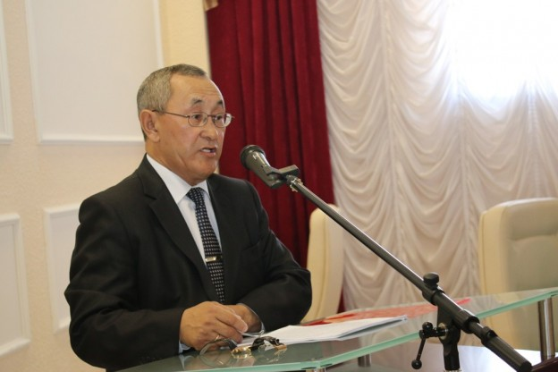
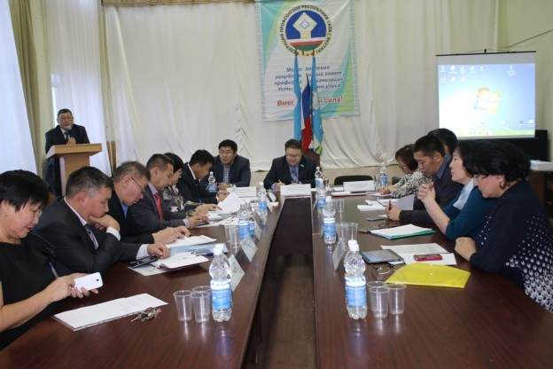

17 ноября Декаду откроет традиционный День бесплатной юридической помощи населению, который ежегодно организовывает Федерация профсоюзов республики совместно со своими социальными партнерами.

Компания "ФЕДЕРАЦИЯ ПРОФСОЮЗОВ РЕСПУБЛИКИ САХА (ЯКУТИЯ)" зарегистрирована 8 августа 2002 года, регистратор. Полное наименование — ОБЩЕСТВЕННАЯ ОРГАНИЗАЦИЯ "ТЕРРИТОРИАЛЬНОЕ ОБЪЕДИНЕНИЕ ОРГАНИЗАЦИЙ ПРОФСОЮЗОВ "ФЕДЕРАЦИЯ ПРОФСОЮЗОВ РЕСПУБЛИКИ САХА (ЯКУТИЯ)".

Профсоюзный форум «Скользи с нами 2017!» Молодежный Совет Саха (Якутской) республиканской организации работников государственных учреждений и общественного обслуживания Российской Федерации проводит активную работу среди молодежи, организует для них различные мероприятия. Вот и профсоюзный форум «Скользи с нами 2017!», который проходил в День народного единства, на ледовом стадионе «Эллэй Боотур» в ночное время стал одним из интересных событий года.